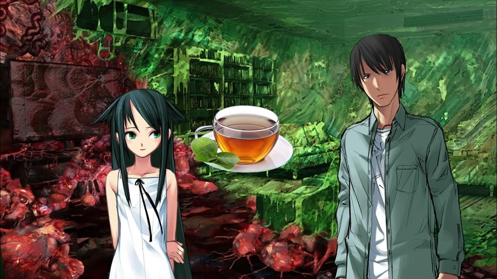

Информация
Saya no Uta (яп. 沙耶の唄, Песнь Саи) — визуальная новелла производства Nitroplus в жанре ужасов и мистики с эротическими сценами. По её мотивам выпускается англоязычный комикс Song of Saya. Первый выпуск был представлен IDW Publishing в феврале 2010.